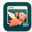

Flying Pig
Customer Service Copilot
Helper Offline
Work Window Offline
Choose a website
Ready
Tell Flying Pig the customer-service problem, then supervise it in the visible work window.
Helper
Offline
Model
Check key
Work Window
Open it
Chat Surface
Prepare tab
Task Brief
Ready
Login/Auth
Browser only
Safety Gate
Ready
Setup
Choose the model Flying Pig will use
Model API key
Connect the helper to check credential status.
Keys are stored only in your local Flying Pig env file.
Getting ready
Three things before the first run
- Configure the modelUse a saved API key or local CLIProxyAPI.
- Open the work windowLog in and open the support chat there.
- Start the taskFlying Pig will ask only when your decision matters.
New task
What should Flying Pig handle?
Describe the outcome you want. You can refine the starter text before beginning.
Open the work window before starting.
Step
-
Started
-
Updated
-
Timing
Run Speed
Activity